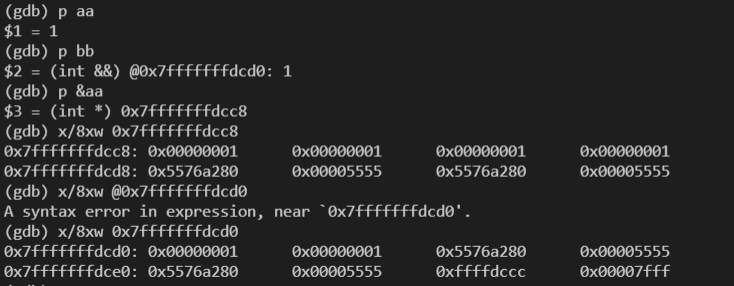

现代stl是模板编程的优秀例子
容器的左值和右值
左值还是右值
vector内部元素返回的是左值还是右值呢? 答案是左值
vector<int> vect = {1,2,3,4};
int b = vect[0];
int& b2 = vect[0];
// 输出
1
1
int& b2 = vect[0];
// 无法通过编译
param.cpp:19:11: error: conflicting declaration ‘int&& b’- 但
vector的成员变量以右值形式返回
size_t& size = vect.size();
// 不能通过编译
error: cannot bind non-const lvalue reference of type ‘size_t& {aka long unsigned int&}’ to an rvalue of type ‘std::vector<int>::size_type {aka long unsigned int}
/// 迭代器返回的也是右值
auto& iter = vect.begin();
// 报错
cannot bind non-const lvalue reference of type ‘__gnu_cxx::__normal_iterator<int*, std::vector<int> >&’ to an rvalue of type ‘std::vector<int>::iterator {aka __gnu_cxx::__normal_iterator<int*, std::vector<int> >}’
/// 可见auto 解析成了std::vector<int>::iterator
/// 元素返回的是左值
vector<int>&& num = *vect.begin();
// 报错
invalid initialization of reference of type ‘std::vector<int>&&’ from expression of type ‘int’swap
现代的swap实现
template<typename T> void swap(T& t1, T& t2) {
T temp = std::move(t1); // or T temp(std::move(t1));
t1 = std::move(t2);
t2 = std::move(temp);
}vector的
swap函数,只是对内部主要迭代器(指针)进行了swap, 不是拷贝内存。void _M_swap_data(_Vector_impl& __x) { std::swap(_M_start, __x._M_start); std::swap(_M_finish, __x._M_finish); std::swap(_M_end_of_storage, __x._M_end_of_storage); }std::swap位于move.h文件中, 实现如下void swap(_Tp& __a, _Tp& __b) { // concept requirements __glibcxx_function_requires(_SGIAssignableConcept<_Tp>) _Tp __tmp = _GLIBCXX_MOVE(__a); __a = _GLIBCXX_MOVE(__b); __b = _GLIBCXX_MOVE(__tmp); } // ..其中 #define _GLIBCXX_MOVE(__val) std::move(__val)std::move将传入的参数转成右值(传入的左值, 右值, 左值引用, 右值引用均转为右值), 因此__a = _GLIBCXX_MOVE(__b);和a = 1差不多一个意思。类似于传指针&a, 令a=1, 这样a的内容就修改了, 参数左值引用这里相当于传指针(神奇)。这里
__a理解成左值,而不是左值引用可以理解为, 编译时把
_GLIBCXX_MOVE__b当成右值看待, 把右值赋给左值。__a相当于传指针, 的*a, 自动解指针。
引用
- 注意一句话, 引用绑定对象后, 不能再绑定其他对象, 这叫用其他对象修改引用绑定的值
string str1="a";
string str3="b";
string &str2=str1;
/// 这句话不是str2绑定str3, 而是用str3改变str2所绑定的, 也就是str1
/// 或者说str2地址不变, 里面的值用str3换了
str2=str3;
cout << str2<<endl;
cout << str1<<endl;
/// 输出
b
b
/// 同样适用于右值引用
string&& str4="a";
/// 用"b"改变str4里面的值
str4="b";- 引用和传参
不论 左值引用 还是 右值引用 的在传参时, 被视为左值，但修改引用会连带修改引用值。
Point bar(Point& val) {
//...
val = std::move(1); // val这里视为普通左值
val++; // val一旦修改会影响引用值
return val; // 这里返回左值
}
Point b = bar(); // bar()返回的是左值, 如果是对象会有耗时的拷贝构造临时变量等
Point bar(Point& val) {
//...
val = std::move(1); // val这里视为普通左值
val++; // val一旦修改会影响引用值
return std::move(val); // 返回右值
}
Point b = bar(); // 这样减少拷贝构造了, 只调用一个operator=()- 左值, 左值引用都可以绑定右值引用, 当然左值引用可以绑定左值, 左值也可以等于左值(对象是拷贝构造), 左值也可以等于左值引用, 左值引用也能绑定 左值, 传导
string&& str4="a";
str4="b";
cout << str4<<endl;
cout << str4<<endl;
string str5 = str4; /// 左值绑定右值引用
string& str6 = str4; /// 左值引用绑定右值引用
string str5 = str2;
string& str6 = str2;
str6 = "c";
/// 以下全部输出c
cout << str6<<endl;
cout <<str2<<endl;
cout <<str1<<endl;左值能绑定右值, 左值引用不能绑定右值
右值引用能绑定右值, 但右值引用不能绑定左值或者左值引用, 右值引用也不能=右值引用。换句话说, 右值引用只能绑定右值
std::move将参数转为右值
- 对于左值引用而言, 左值引用可以绑定多个左值, 一旦一个左值引用修改, 其他都被影响
int aa =1;
int& bb = a;
int& cc = a;
bb++;
cout << cc<<endl;
// 输出 2- 利用
std::move将参数转为右值这时候
t1 = std::move(t2);
// 等价于
T t1 = t2 /// 注意如果t1是左值, 可能发生operator=操作符注意std::move返回参数不能被左值引用接受
- 更常用的是用右值引用接受
std::move返回的结果
int b = 3;
int&& c = std::move(b);
c = 4;
cout << b<<endl;
/// 输出为4但注意一旦c修改了值, b的值也跟着改变, 这类似于左值引用。
- 那么右值引用根据什么找到右值, 应该是寻址, 右值也是存储在内存中(可以理解成全局变量), 肯定有地址。但注意右值一旦被释放, 右值引用也没有了。
cout << aa<<endl;
cout << &aa<<endl;
int&& bb = 1;
cout << bb<<endl;
cout << &bb<<endl;
输出
1
0x7fff4e2ffe18
1
0x7fff4e2ffe20
右值引用和左值的处理差不多感觉, 虽然右值引用可以理解成左值, 但是它不能绑定左值(右值引用是只能绑定右值的左值2333), 但右值引用可以被左值引用绑定。
int c;
int && d = c;
// 编译失败
error: cannot bind rvalue reference of type ‘int&&’ to lvalue of type ‘int’- 以下
更多是防止中间临时变量生成等不必要的拷贝, 但注意将template<typename T> void swap(T& t1, T& t2) { T temp = std::move(t1); // or T temp(std::move(t1)); t1 = std::move(t2); t2 = std::move(temp); }std::move(t1)右值赋给左值t2依然要运行operator=, 这和int a = 1差不多。对内置类型，如果左值引用, 右值引用相比于传值效率也没啥提升。所以vector使用
void _M_swap_data(_Vector_impl& __x)
{
std::swap(_M_start, __x._M_start);
std::swap(_M_finish, __x._M_finish);
std::swap(_M_end_of_storage, __x._M_end_of_storage);
}而不是
vector<int> b;
vector<int> a = std::move(b);因为这照样要拷贝。。。
可以看出所谓右值引用, 左值引用都是编译器的行为, 例如编译器某种情况下将右值引用看做左值并进行编译, 运行期它就是左值。
临时对象的概念也是编译器做的事, 不排除编译器将临时对象用右值引用处理避免拷贝构造来提升效率。
std::move只是将参数转为了右值, 使用其效率的提升可能是降低了中间临时变量生成, 但不能杜绝拷贝。右值引用&&是真滴可以大大提升效率所以用右值引用接收std::move。
/// std::make_unique<int>(1)返回右值, p是左值
auto p = std::make_unique<int>(1);
/// std::move可以将左值转为右值
/// q是个左值,
auto q = std::move(p);
assert(p == nullptr); // OK: reset to default
p.reset(new int{2}); // or p = std::make_unique<int>(2);
assert(*p == 2); // OK: reset to int*(2移动构造函数
- 移动构造函数提升的效率来自传参不同拷贝构造或者临时对象, 函数内复杂度没有什么提升。
MemoryBlock(MemoryBlock&& other) noexcept
: _data(nullptr)
, _length(0)
{
std::cout << "In MemoryBlock(MemoryBlock&&). length = "
<< other._length << ". Moving resource." << std::endl;
// Copy the data pointer and its length from the
// source object.
/// other当前是个右值, 但可以直接调用other._data
_data = other._data;
_length = other._length;
// Release the data pointer from the source object so that
// the destructor does not free the memory multiple times.
other._data = nullptr;
other._length = 0;
}
// Move assignment operator.
MemoryBlock& operator=(MemoryBlock&& other) noexcept
{
std::cout << "In operator=(MemoryBlock&&). length = "
<< other._length << "." << std::endl;
/// other当前是个右值object, 因此取地址和this指针比较
if (this != &other)
{
// Free the existing resource.
delete[] _data;
// Copy the data pointer and its length from the
// source object.
_data = other._data;
_length = other._length;
// Release the data pointer from the source object so that
// the destructor does not free the memory multiple times.
other._data = nullptr;
other._length = 0;
}
return *this;
}std::move可以配合移动构造函数使用, 如下
void operator=(const RValue&& a) {
/// 对a.source处理转为右值
sources = std::move(a.sources);
cout<<"&& =="<<endl;
}使用std::move是编译期行为, 不会影响运行效率(太强了)
std::move的实现
std::move就是将传入的参数(包括左值, 右值, 左值引用, 右值引用), 转为右值, 是编译期行为, 不影响运行效率
template<typename T>
typename remove_reference<T>::type&& move(T&& t)
{
return static_cast<typename remove_reference<T>::type &&>(t);
}- 函数返回值类型等价于调用者接收返回值的类型, 这里返回值类型为
&&右值引用, 因此必然有
remove_reference<T>::type&& x = std::move(y)
// 函数内部先用返回值进行接收
remove_reference<T>::type&& x_ = static_cast<typename remove_reference<T>::type &&>(t);
/// 返回值再递给调用者
remove_reference<T>::type&& x = x_;
/// 因此最好函数返回值和接收者类型一致- 不难理解为什么返回右值了, 2333
右值引用只能接受右值。effective modern c++的原话是, 保证了std::move返回的真的是右值引用, 这很重要, 因为函数返回的右值引用是右值, 因此std::move将它的参数转换为右值, 这就是它的全部作用。,
如下
int b = 3;
int&& a = static_cast<int&&>( b);
a++;
cout << b<<endl;
/// 输出4
/// 这时候能被int&& a接受, static_cast<int&&>( b)就是个右值
/// 右值引用只能接受右值, int&& d = a;会报错
int& a = static_cast<int&&>( b); /// 报错如下
cannot bind non-const lvalue reference of type ‘int&’ to an rvalue of type ‘int’ int& a = static_cast<int&&>( b);
/// 左值引用是能绑定右值引用, int& d = a;正常。说明
/// static_cast<int&&>( b)将b转成了一个右值
int a = static_cast<int&&>( b); // 正常运行,输出b为3
static_cast
- static_cast转移了左值右值!
int b = 3;
/// b变成了一个右值
int a = static_cast<int>( b); //正常
int& a = static_cast<int>( b); //报错
如上, static_cast<int>将左值b转移成了右值, 可赋给int a;
/// 如下, b还是一个左值
int a = static_cast<int&>( b); //正常
int& a = static_cast<int&>( b); //正常
/// b又变成了一个右值
int a = static_cast<int&&>( b); // 正常运行,输出b为3
int& a = static_cast<int&&>( b); // 报错
int&& a = static_cast<int&&>( b); // 正常运行,输出b为4- 原来关键在
static_cast啊, 这老哥不但转了类型, 还转了左值右值。
int fun() {
int* a = b;
return a; // 就算a是指针, 但以返回类型int为准
}
double b= fun(); // b与int返回类型应该一致
static<T>(a)并不是将a转为T, 而是转为能以T为左值接受的右值, 对static<T&>(a)来说, 返回能被左值引用T&接受的左值(左值引用是左值, 左值自然就是等号右边的右值了)。显然
static_cast<typename remove_reference<T>::type &&>(t)将t转为能被typename remove_reference<T>::type &&接受的右值。static_cast<T&&>(b) 可以将 T, T&, T&& 类型的b全部转为右值, 真滴牛批, 这才是核心, 不是人云既云的
std::move所谓左值右值, 只是编译器的定义, 只是左值对象赋给左值, C++会调用拷贝构造, 临时对象等操作(这是编译器的选择), 但右值对象赋给左值只需要一次
opeartor=, 可以提高效率。这不意味着一个std::move就完事了, 还需要对对象内部的指针进行操作, 避免拷贝(例如vector交换指针begin(). 和end()而不是拷贝), 这些不是std::move解决的, 可以说std::swap使用了std::move而不等于std::move1。
———以上均在g++7.5测试